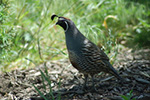
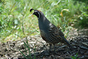

Welcome to Backyard Birds of Utah!
If you love birdwatching like we do, you should enjoy looking around this site.
Take a look at our Bird Profiles and take the opportunity to complete our survey.
[Instructions: Mouse over small images to see larger image.]
 


Soaring Hawk
Wow!!! Who would have thought all these birds live in Utah. I was attracted to the Birds of Utah calendar because of the great horned owl on the cover. I especially like finding and watching raptors such as: hawks, bald and golden eagles, vultures and owls. It is very rare to have some of these big raptors show up in your own yard. Bart Jones has inspired me to get out my 35mm camera and try to see what birds I can attract to my own backyard. I can't wait to see what he comes up with for next year's calendar.